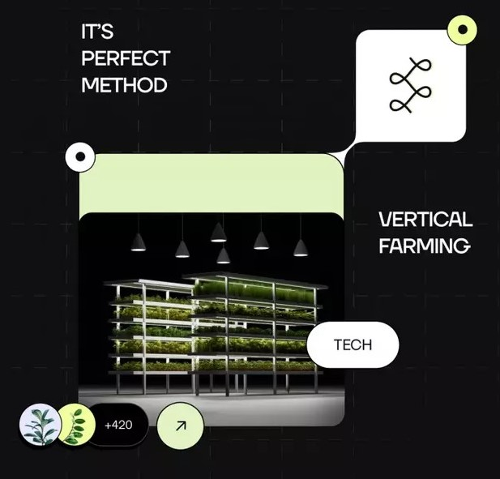
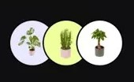

Our Vertical farming startup Substainable, locally grown produce to urban areas. With oru innovation technology, we're revolutionizing the way we grew and consume fresh food.


Choose the right crops Select the best crop for your vertical farming
1
Set up your grow system install and set up your vertical farming